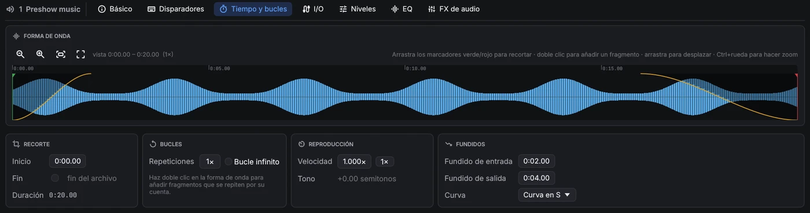
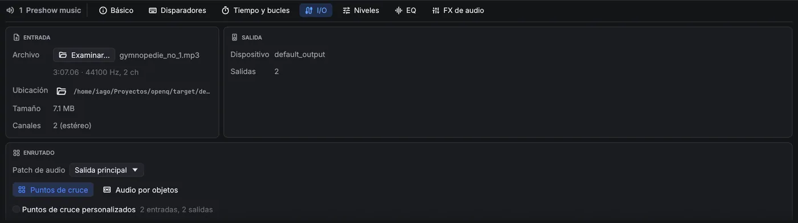
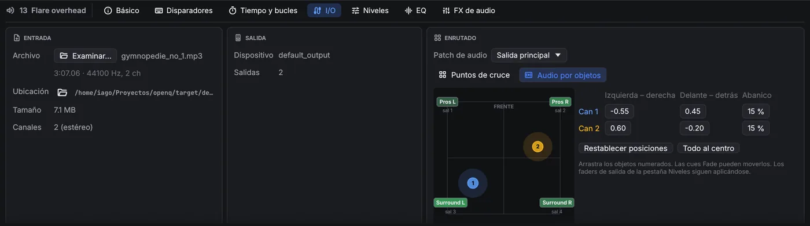
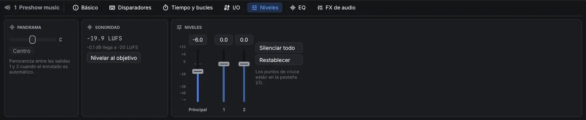
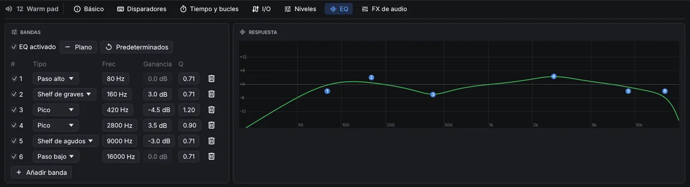
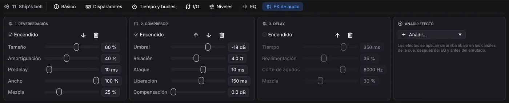
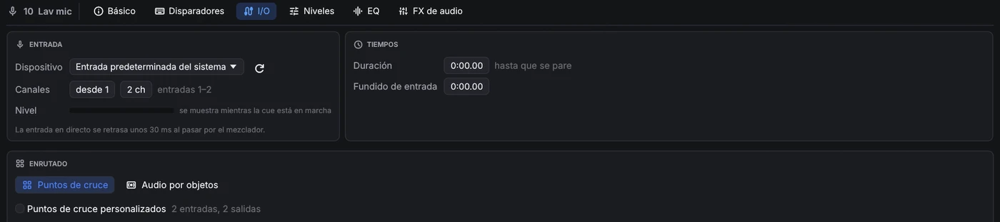

Audio
3.1Cues de audio
Tiempo y bucles

- Recorte: arrastra los marcadores de inicio y fin, o escribe los tiempos. Arrastra la forma de onda para desplazarte y usa Ctrl+rueda para hacer zoom. Una línea muestra la posición de reproducción mientras la cue suena.
- Bucles: fija un número de Repeticiones o marca Bucle infinito para repetir hasta que se pare.
- Reproducción: la velocidad es varispeed. El tono cambia con la velocidad, como en un magnetófono.
- Fundidos: una entrada desde silencio al empezar la cue y una salida a silencio al final, con varias curvas a elegir, sin necesidad de una cue Fade aparte. La salida necesita un final conocido, así que no ocurre mientras la cue se repite indefinidamente; con un fragmento en vamp suena después del Devamp.
- Fragmentos: haz doble clic en la forma de onda para añadir un marcador de fragmento. Arrástralo para
moverlo y haz clic derecho para borrarlo. Cada fragmento suena un número fijo de veces o se repite hasta que una cue
Devamp (o el mensaje OSC
/cue/<n>/devamp) lo libera. Entonces termina la pasada actual y la reproducción sigue. Úsalo para música que tiene que hacer vamp hasta la frase de un actor.
I/O

- Entrada: el archivo de medios, con su duración, formato, ubicación en disco (y un botón para mostrarlo en el gestor de archivos), tamaño y número de canales. Examinar… sustituye el archivo.
- Salida: el dispositivo de audio por el que suena la cue y su número de salidas (se ajusta en Ajustes → Audio).
- Enrutado: automático, o una matriz de puntos de cruce de los canales del archivo a las salidas del dispositivo. Cada punto de cruce tiene su propio nivel en dB, así que un archivo estéreo puede alimentar ocho altavoces. O cambia a Audio por objetos y coloca los canales en la sala (más abajo).
Patches de audio
Además del dispositivo de salida principal, un espectáculo puede sonar por más dispositivos: añádelos como patches de audio en , ponle nombre a cada uno y elige su dispositivo. Cada cue elige su patch arriba de la tarjeta Enrutado de su pestaña I/O (Salida principal es el dispositivo elegido encima de los patches); su enrutado y sus faders de salida apuntan entonces a las salidas de ese dispositivo. Un dispositivo de patch que se desconecta para sus sonidos y vuelve solo. Qué dispositivo usa cada patch es cosa del ordenador, como el principal. Las cues pueden enrutar hasta 64 canales a hasta 64 salidas.
Grupos
Con puntos de cruce personalizados, el botón Grupos da a los puntos de cruce una letra de grupo: haz clic en un punto para pasar por A, B, C…, clic derecho para quitarla. Los puntos con la misma letra se mueven juntos: arrastra uno y los demás cambian los mismos dB. Vuelve a pulsar Grupos para volver a los niveles; las letras quedan a su lado.
Audio por objetos

El audio por objetos enruta el sonido según de dónde debe venir en lugar de por salida. Elige Audio por objetos en la tarjeta Enrutado: cada canal del archivo se convierte en un objeto que arrastras por la sala (o cuya posición escribes). Los altavoces más cercanos a un objeto lo reproducen más fuerte; el nivel baja 6 dB cada vez que la distancia se duplica, y la potencia total es la misma esté donde esté el objeto, así que moverlo nunca cambia su volumen. Apertura ensancha un objeto desde un punto (0 %) hasta toda la sala (100 %). Los faders de salida de la pestaña Niveles siguen aplicándose, y las cues Mic y las bandas sonoras de vídeo también pueden usar audio por objetos.
La sala se ajusta una vez por espectáculo en Ajustes → Audio. Una cue Fade puede mover los objetos, para un sonido que vuela por la sala. Los movimientos se suavizan, así que arrastrar un objeto en una cue que suena no produce chasquidos.
Niveles

El fader Principal fija el nivel de la cue. A su lado hay un fader por cada salida del dispositivo de audio, que ajusta esa salida después de la matriz de enrutado. Arrastra un fader o escribe un valor en la casilla de encima; haz doble clic en un fader para devolverlo a 0 dB. Panorama mueve el sonido entre las salidas 1 y 2 mientras el enrutado es automático.
Sonoridad
Cuando se abre un archivo de sonido por primera vez, OpnQ mide su sonoridad (integrada, en LUFS, como en radiodifusión) mientras dibuja la forma de onda. La pestaña Niveles la muestra junto con el cambio que lleva el archivo a la sonoridad objetivo del espectáculo (, −23 LUFS si no la cambias); Nivelar al objetivo pone ese nivel en la cue. Para nivelar muchas cues a la vez, selecciónalas (o los grupos que las contienen) y elige . Así cues de archivos distintos suenan con la misma sonoridad.
EQ

Los tipos de banda son paso alto, shelf de graves, pico, shelf de agudos y paso bajo. EQ activado activa y desactiva todo el ecualizador.
FX de audio

Las cues de audio, Mic y vídeo tienen una pestaña FX de audio: una cadena de hasta ocho efectos que actúan de arriba abajo sobre los canales de la cue, después del EQ y antes del enrutado. Añadir… pone un efecto nuevo al final; las flechas cambian el orden, Encendido puentea un efecto sin perder sus ajustes.
| Efecto | Ajustes | Uso |
|---|---|---|
| Delay | tiempo, realimentación, corte de agudos, mezcla | Ecos; el corte de agudos oscurece cada repetición. |
| Reverberación | tamaño, amortiguación, predelay, ancho, mezcla | Sonido de sala para grabaciones secas o voces. |
| Compresor | umbral, relación, ataque, liberación, compensación | Iguala el nivel; todos los canales se mueven juntos. |
| Limitador | techo, liberación | Nunca deja pasar un pico por encima del techo. |
| Puerta de ruido | umbral, rango, ataque, mantenimiento, liberación | Baja un micrófono entre frases. |
| Distorsión | ganancia, tono, salida, mezcla | Sonidos de radio, de teléfono o saturados. |
| Chorus | velocidad, profundidad, retardo, realimentación, mezcla | Engorda y ensancha un sonido. |
| Bitcrusher | bits, submuestreo, mezcla | Sonidos lo-fi, de videojuego retro. |
Los cambios de nivel, fader de salida, panorama, EQ, efectos, enrutado y objetos se oyen al momento en una cue que suena, así que puedes ajustarlos durante un pase. Las colas de reverb y delay continúan a través de una edición.
Cues Micro

Una cue Micro envía una entrada en directo (un micrófono, una entrada de línea, un reproductor) por el mezclador de OpnQ, así que tiene los mismos faders de Niveles, panorama, EQ y enrutado que una cue de audio, y las cues Fade pueden fundirla. En la pestaña I/O elige el dispositivo de entrada y qué canales usar, por ejemplo las entradas 3–4 para un par estéreo. Una duración de 0 mantiene la entrada abierta hasta que se para la cue, y la entrada en fundido la sube desde silencio. La entrada llega a las salidas con unos 30 ms de retraso, demasiado poco para oírse como eco en la mayoría de salas.